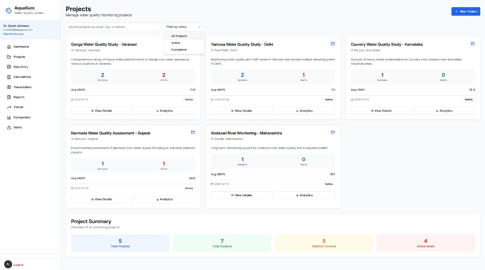

AquaSure is a scientific tool designed to calculate the Heavy Metal Pollution Index (HMPI) in water samples. It helps researchers and policymakers analyze environmental water quality using heavy metal concentration data.
